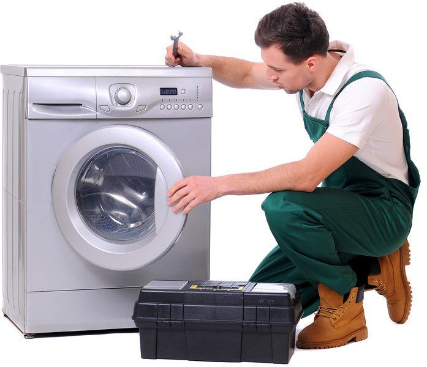

Automotive Electric



للاتصال بنا
15098 الخط الساخن
01096666507
01096666876
نحن نملك افضل العمالة الفنية المدربة كم اننا نستخدم قطع الغيار الاصليه من بلد المنشا بالضمان لذا تتضمن خدمة الإصلاح الخاصة بنا الاتفاق على موعد زيارة الصيانة أو الإصلاح كما يتم الاتصال بالعميل بعد اتمام الاصلاح او الصيانه للاطمئنان على مدي رضائه عن تنفيذ الخدمة. وذلك عن طريق البريد أو البريد الإلكتروني أو الفاكس أو المكالمة الهاتفية تماشيا مع قوانين حماية المستهلك. وتعتبر إجراءات ما بعد الصيانة جزءًا لا يتجزأ من عقد الصيانة للتأكد من أن خدمة الإصلاح تلبي جميع المتطلبات ذات الصلة، لنكون قادرين على اتخاذ المزيد من الإجراءات العلاجية تبعا لتعقيبات العملاء